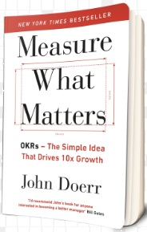
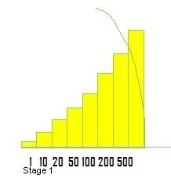
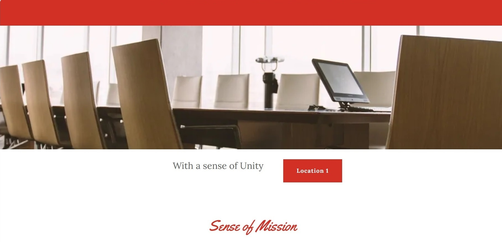

Action in a 1st Community begins with getting User 1.
Never is it a case that something can begin and suddenly the system is everywhere. There is a subtlety in inception. This is a new system and has to be taught. Getting User 1 is the building block for all of the Milestones in Stage 1 and the stages that follow.
Promoter
Timothy holds a Bachelor of Science Degree in Mathematics from University College Cork — the University of Professor George Boole.

Measure What Matters
Using the framework promoted by Mr John Doerr, the OKR Framework, Timothy has laid out a series of Milestones for Phase 1.

Milestones
There are 7 Milestones in Community One.
Milestone 1 is getting User 1.

Chairperson
Yes, a company is a legally incorporated entity, but who is the Chairperson who can come in and say, “User 1 is being taught to save in this way.” Only then do we go from there.
Cornwall is the chosen location to begin Community Savings Solution.
There is a Credit Union in Cornwall and a distribution of potential starting locations. Once Stage One is achieved there, we can expand into other communities in Stage 2, then regionally in Stage 3. National rollout in the UK follows in Stage 4.
About Us“
Savings and Credit are like two pillars. However, one of these systems has a real-time enablement and a global infrastructure! I looked at the inverse and reasoned that there is a way to let both have these exact equivalences.
Subscribe for Updates
Stay connected as we begin in Cornwall and build Community One. Receive news on milestones, community stories, and our journey ahead.